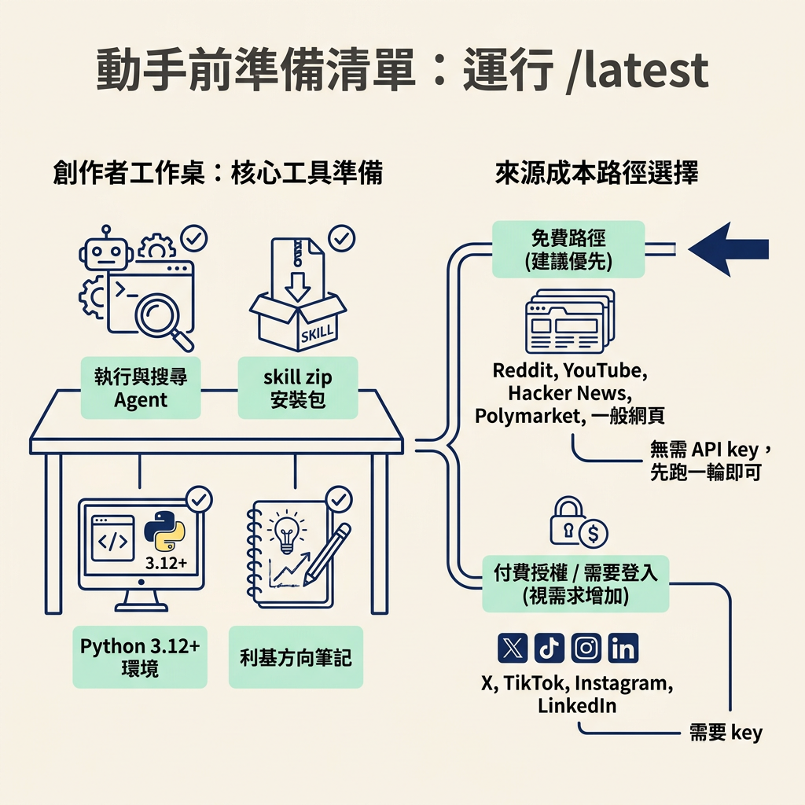
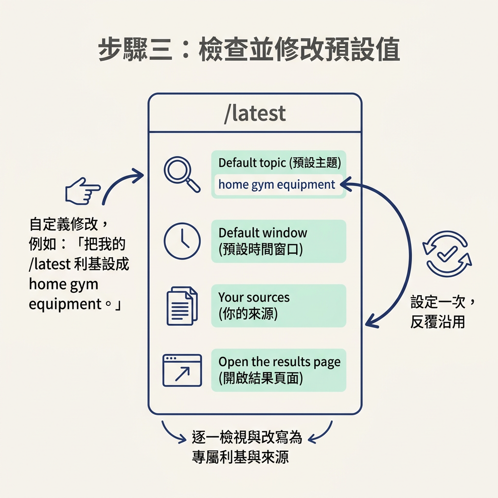
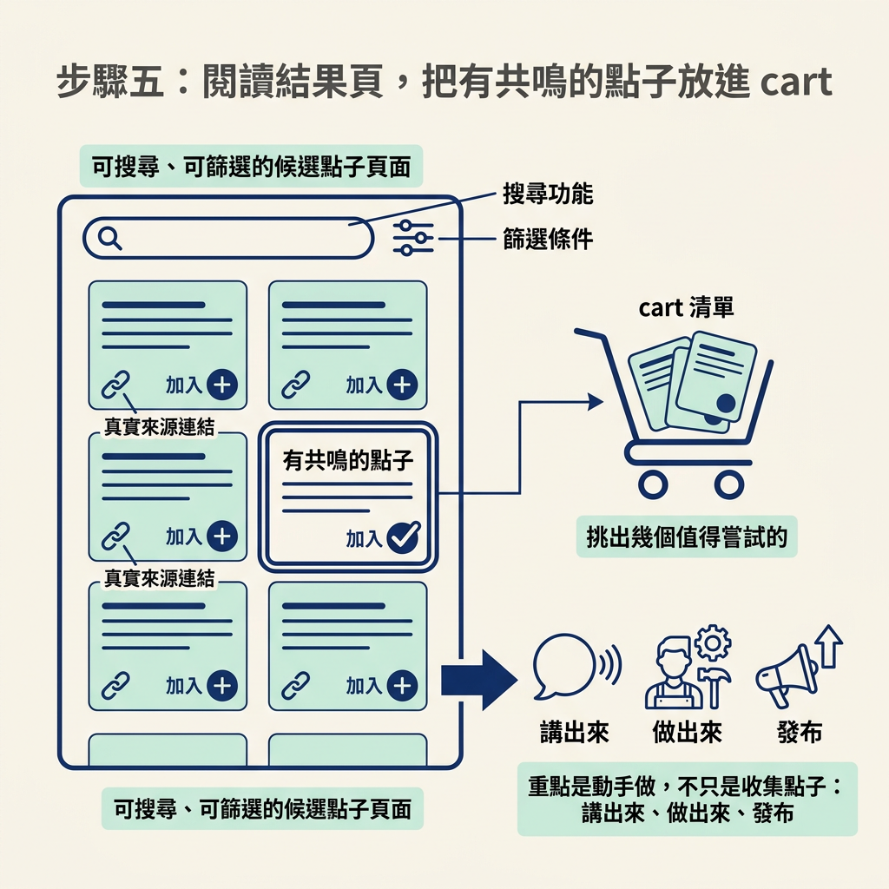

這一步在 Idea Sources 與 Well of Knowledge 的流程裡：你會把前面整理好的來源交給 `/latest`，請它搜尋利基最近七天的動靜，再整理成最多 10 個候選點子。動手前，你需要一個能執行指令與搜尋網頁的 agent、skill zip、符合要求的 Python 環境，以及這次要研究的利基。完成後，你會得到一個能在瀏覽器開啟的結果頁，並能把有共鳴的候選點子收進 cart，也就是稍後要挑選的點子清單。
你已經有 well of knowledge，也就是整理好的利基資訊與來源清單，還有一支會主動提醒你的 agent。現在要接上現成的工具 `/latest`，讓它檢查你所在利基最近七天的動靜，並翻成最多十個排好序的內容點子。
你不必先弄懂工具內部怎麼運作。照著步驟安裝、執行，再學會看懂結果，就能得到一份可以開始動手的候選清單。
先說成本：這套工具用免費路徑就能執行。Reddit、YouTube、Hacker News、Polymarket 和一般網頁都不需要 API key；只有 X、TikTok、Instagram、LinkedIn 這類需要登入或付費授權的來源，才需要 key。先用免費來源跑一輪即可，有需要再考慮加上其他來源。

設定大約需要五分鐘。先從課程頁面下載 skill 的 zip，再把下面整段安裝 prompt 貼給 agent：
"""I'm giving you a resource called Latest. It's in the file robonuggets-latest.zip (in my Downloads folder unless I say otherwise). Follow the README to set it up. Recommend how it would best apply to our setup in plain language, and ask me a few questions to clarify my intent before you install it."""
Agent 會先讀 zip 裡的 README，再問你幾個關於利基的問題。Prompt 要它先問清楚再安裝，所以接下來會有一段問答。
Agent 提問時，請說清楚你在做什麼主題、內容是講給誰聽，以及想採用什麼形式。已經有利基的話，照實回答即可。
還沒有利基也沒關係。講師建議可以直接請 Claude：「根據你對我所知道的一切，建議一些我可以在內容裡講的東西。」它會根據你平常累積的對話提供方向。先挑一個你答得出來的主題開始，之後還能再調整。
安裝完成後，`/latest` 會有一區預設值，決定它每次要研究什麼、搜尋多久，以及結果要怎麼呈現。設定好後會反覆使用，因此先檢查一遍。內容如下：
<!-- YOUR DEFAULTS: change these values here, in one place. Or ask your agent, for example "set my /latest niche to home gym equipment". --> - Default topic: AI agents (an example, so it works out of the box. Change it to your niche, for example "home gym equipment" or "crochet patterns") - Default window: 7 days (a slower niche may need 14 or 28) - Ideas returned: up to 10 - Audience the ideas must help: beginners in your niche who want practical, hands-on help - What the ideas are for: short videos you film on your phone or screen (change it to posts, newsletters or podcasts if that is your format) - Your sources (your well of knowledge, where news in your niche lands first), used when they fit the topic. Swap these AI examples for your own: - Reddit communities: AI_Agents - X accounts: none yet - TikTok or Instagram creators: none yet - Websites: https://www.star-history.com/ - Slug for the default topic in run ids: the topic's first 4 words, lowercase, hyphens - Results pages go to: the output folder inside this skill's folder - Open the results page when done: yes (no = write it only) - Next step to point at: none <!-- END YOUR DEFAULTS -->
優先檢查以下幾個欄位：
你可以直接修改這些欄位，也可以請 agent 代改，例如：「把我的 /latest 利基設成 home gym equipment。」設定完成後，之後每次執行都會使用這份預設值。

安裝完成後，輸入 `/latest`，工具就會使用預設利基開始研究。若要指定這次的主題，可以輸入 `/latest home gym equipment`。想換搜尋時間範圍時，告訴它「last 14 days」或「last 28 days」即可；這只會改變這一輪的設定。
執行後，工具會告訴你研究大約需要三分鐘。第一次執行會比較久，因為研究引擎需要初始化。完成後，你會看到最多 10 個依序排列的候選點子，每個點子都附有可以實際開啟的來源連結。工具不會保留找不到真實連結的內容，因此你可以逐項查看來源、確認資訊。
預設搜尋來源包括 Reddit、X、YouTube、GitHub 和一般網頁，也會加入你自己的常用來源。講師特別提醒：你自己的來源最重要，因為你最了解自己的利基。如果這一輪沒有搜尋到某個來源，例如你沒有 X 的授權，結果頁也會列出哪些來源未能搜尋。
Skill 執行完成後，會用一個小程式把結果寫成可在瀏覽器開啟的頁面。這個程式是 `scripts/fill.py`，使用方式如下：
python scripts/fill.py <results.json> [out.html] [--no-open]
程式會把這一輪的資料和內建字型放進 HTML 檔，因此結果頁不連網也能閱讀，預設會自動開啟。頁面上可以做這些事：
最後記住講師反覆強調的一點：量才是重點。看完清單不是終點，你還得試著講出來、做出來並發布。這一輪的目標不是收集一大堆點子，而是挑出幾個值得嘗試的，然後開始做。

安裝 `/latest` 的流程是：下載 zip、把安裝 prompt 貼給 agent、回答利基問題、檢查並修改預設值，最後輸入 `/latest` 或 `/latest <你的利基>`。工具預設搜尋最近七天，整理出最多十個排好序的候選點子，每個都附有可驗證的真實連結，並開啟一個可搜尋、可篩選的結果頁。挑出有共鳴的點子加入 cart，就完成了這一節的成果。記住，自己的 well of knowledge 和來源清單最關鍵。
現在你手上有一份 cart，但點子還不是內容。下一步要從 cart 裡挑出真正想做的點子，用自己的語氣改寫成腳本，再把你喜歡什麼回饋給 `/latest`，讓它之後提供的候選點子更符合你的方向。